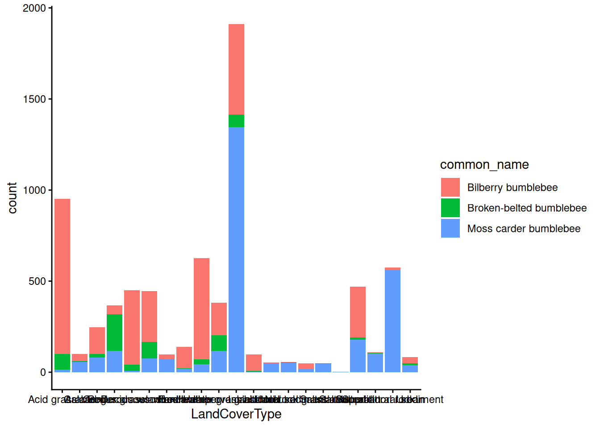
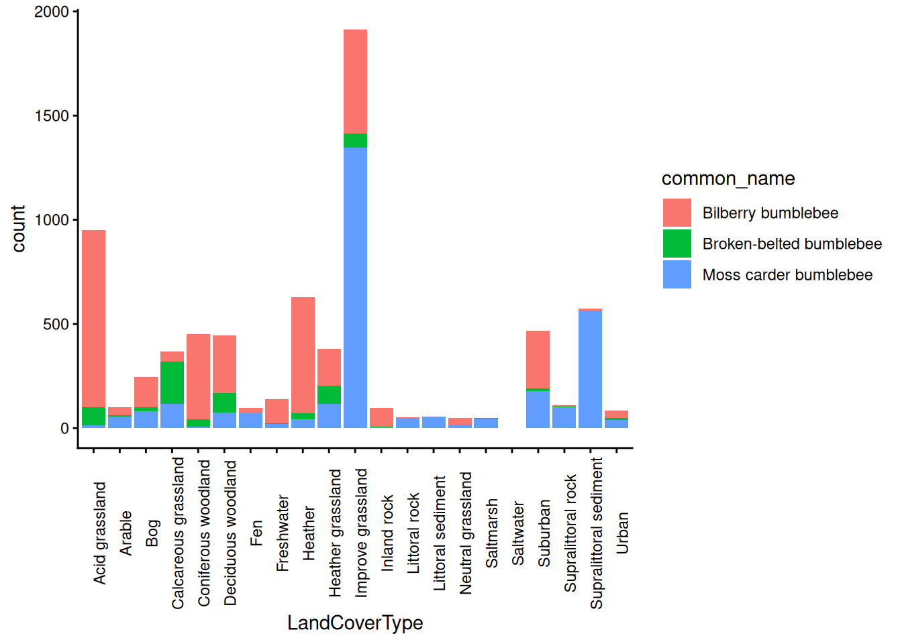
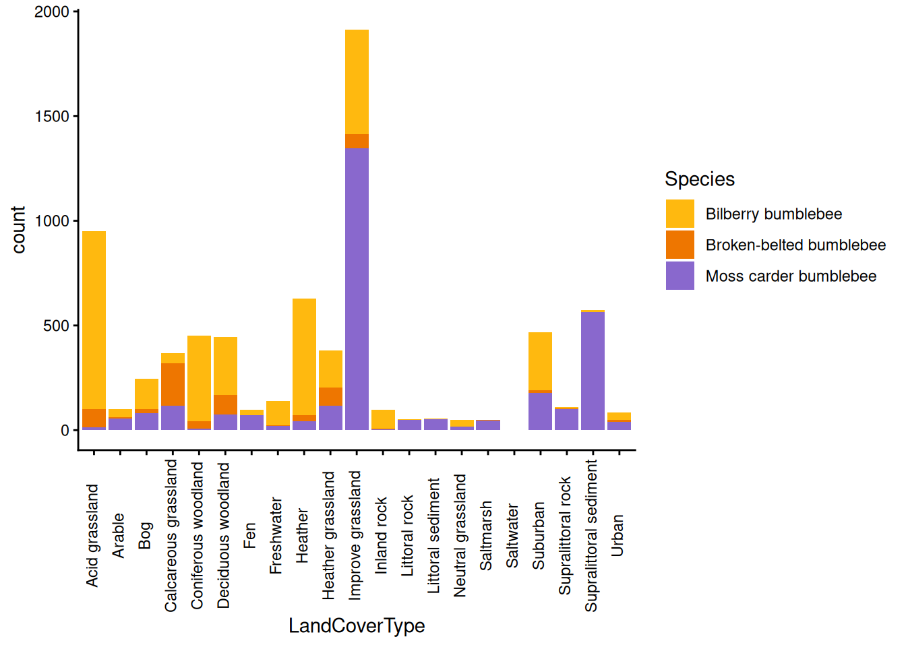
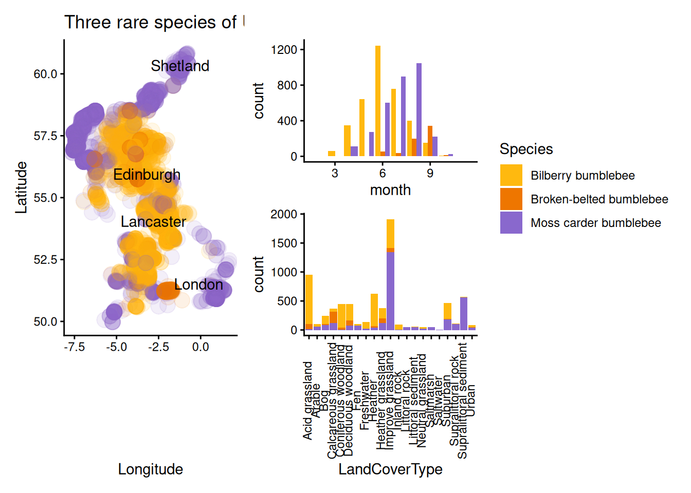

29 Landcover associations
Finally, let’s look at landcover associations for each bumblebee species.
First you’ll need to make a table for counts grouped by species and landcover, just the like the you made for species and month.
Then, you can make a stacked column plot.

Hmmmm… the columns look okay, but the x-axis labels are really difficult to read.
We can add a theme() layer that will rotate the text 90 degrees.
theme(axis.text.x = element_text(angle = 90))Tip! This new theme() layer has to go after any general theme layers (e.g. theme_classic(), theme_bw(), etc.), or it will be overwritten by them.

That looks much better, but the alignment looks a bit off.
We can add another argument (vjust = or “vertical adjustment” in the direction of the text) to fix that.
theme(axis.text.x = element_text(angle = 90, vjust = 0.5))Play around and find the value for vjust = that you think looks best.
Then change the colours and legend label to match your other two graphs.

Questions:
- Which habitats are dominated by one species of bumblebee?
- Which habitats contain a mix of bumblebee species?
- Which habitat contains the greatest number of observations of each species?
29.1 Combine your panels via patchwork
Now you can combine your three figures into one figure using patchwork.
Remember that patchwork uses:
- the pipe symbol (just the vertical line
|- not the full R pipe operator, which is written as|>) to put panels next to each other - the division sign or slash
/to put panels on top of each other - brackets to indicate the grouping of plots
For example, the code below would put figure 1 on top of figure 2 in the left column, and then figure 3 in the right column
(fig1 / fig2) | fig3 If you have multiple figures with the same legend, you can combine (or “collect”) them with the plot_layout() function and the guides argument. (You’ll need to add an extra set to brackets around all the figures to make sure it refers to all of them.)
((fig1 / fig2) | fig3) + plot_layout(guides = "collect") Tip! You may have noticed that we actually add the plot_layout() layer using the + operator, like we do with anything else in ggplot.
This is because the output of patchwork is another ggplot-compatible object.
However as it is a set of plots rather than one single one, some things may work differently to how you expect (see here for more details).
You’ll notice that you still end up with two legends - that’s because geom_point() uses colour = whilst geom_col() uses fill =. So R doesn’t understand that they are actually saying the same thing.
The easiest way to fix that is to simply add a layer to your first geography plot that gets rid of one of the legends:
